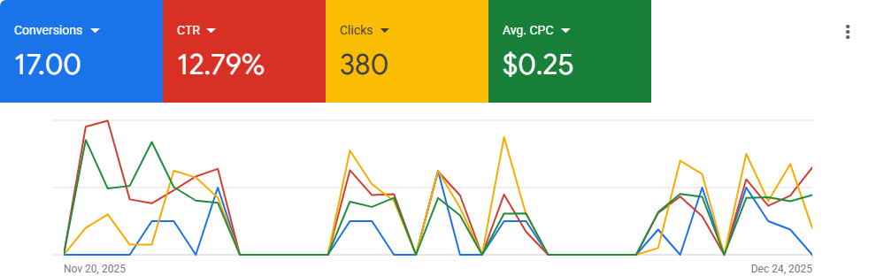
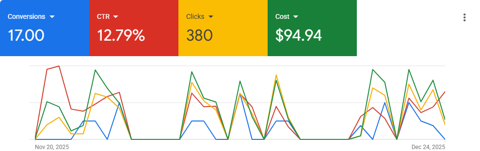
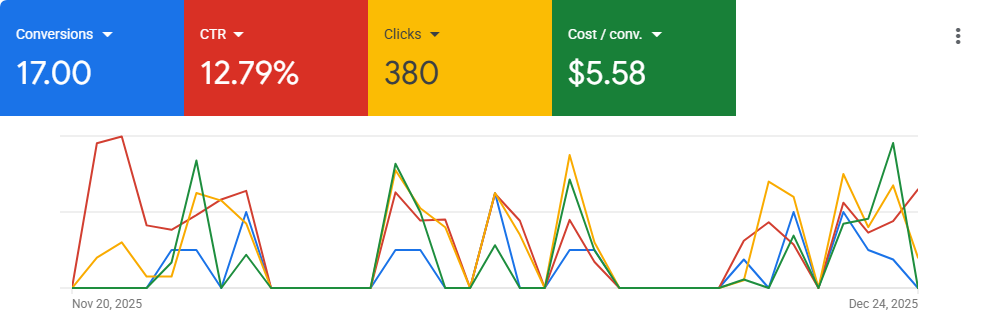

What follows is what that framework looked like applied to one business, from zero digital presence to a measurable, evolving system.
The Situation
When G&P Solar Systems partnered with LeadGiggle, they had no website, no established digital presence, and a pipeline built almost entirely on referrals.
Referrals had helped generate projects, but the challenge was predictability. One successful month didn't guarantee the next.
The business needed a way to consistently reach people actively looking for solar installation services without relying entirely on who happened to recommend them.
The objective was clear: build a measurable customer acquisition system capable of generating qualified enquiries and creating a more predictable path to growth.
What Was Built
Rather than simply launching advertising, the focus was on building the foundations of a customer acquisition system that could be measured, improved, and scaled over time.
The system, visually:
Google Search
Landing Page
Phone Calls + Forms
Qualification
Sales Conversation
Proposal
Installation
Measurement
Optimisation
The initial system included:
A conversion-focused landing page designed to turn search demand into real enquiries
A demand capture strategy focused on reaching people actively searching for solar installation services
Conversion tracking to measure enquiries and campaign performance
Multiple enquiry paths through both website forms and phone calls
An initial lead qualification approach designed to improve enquiry quality
A measurement framework for evaluating performance and identifying future optimisation opportunities
Before The Ads
Before a single shilling went into advertising, the foundation had to be built correctly.
Paid demand capture only works when the system receiving that demand is prepared to convert it.
This meant building a conversion-focused landing experience, strengthening the online presence, and creating a clear path designed to turn search intent into action.
Why Google Search
Google Search Ads were chosen because of where they sit in the buyer journey.
Someone searching for "solar installation Kenya" or "solar panel installers Nairobi" is not casually browsing. They already have intent. They are actively looking for someone who can solve the problem.
For this stage of the business, the objective was to capture existing demand and prove whether a predictable acquisition channel could be created with a controlled budget.
Why Not Meta Ads?
Meta was not ignored. It simply wasn't the first strategic priority.
Channels that create demand, like Facebook and Instagram, work best when the business already has a strong offer, enough testing budget, strong creative angles, and the ability to handle additional enquiry volume.
At this stage, the priority was not creating new demand. It was connecting with people who were already searching for a solar installation provider, and measuring how effectively those opportunities could be converted into qualified enquiries.
Why Not SEO & AI Search Visibility?
Organic visibility through SEO and AI search optimization remains an important long-term investment. It helps businesses build discoverability, strengthen authority, and generate opportunities from people searching organically.
However, organic visibility compounds over time. The immediate objective was to establish a measurable customer acquisition channel without waiting months for rankings to develop. Once a reliable demand capture system had been validated, long-term visibility channels could be layered onto that foundation to create a stronger and more resilient customer acquisition system.
Campaign Details
Detail
Result
Reporting Period
Nov 24 – Dec 24, 2025
Active Campaign Days
24
Campaign Type
Google Search Ads
Average Daily Budget
KSh 500 (~$3.80)
Total Ad Spend
KSh 12,149 (~$94.94)
Although the reporting period covered one month, the campaign was active for 24 days due to scheduled pauses and budget management decisions. All results presented in this case study are based on active campaign days only.
Starting with a controlled budget wasn't a limitation, it was the point. This was G&P Solar's first digital customer acquisition channel. The objective wasn't to maximise spend from day one. It was to validate demand, understand lead quality, and collect enough data to make informed decisions before increasing investment.
$3.80 a day isn't a number to copy. What a business should actually spend depends on its market, competition, service offering, and goals, which is exactly why that gets worked out through a proper strategy call, not lifted from someone else's case study.
Campaign Screenshots
A look at the Google Ads performance dashboard behind this 24-day snapshot.

Average CPC

Cost

Cost / ConversionConversion Rate
Strategic Insights
High-ticket services require conversations, not just enquiries.
The revenue generated from this campaign came through phone conversations. For higher-value purchases, buyers often need confidence before committing. They want to ask questions, understand the solution, and trust the business. The acquisition system needs to create opportunities for those conversations to happen.
Messaging determines who enters the pipeline.
Early messaging attracted people interested in price and payment flexibility. The data showed that high-ticket buyers respond differently. The strongest positioning was around reliability, quality, system design, and long-term value. The lesson was not simply "get more leads." It was "attract better opportunities."
Qualification separates activity from revenue.
A busy inbox does not always mean a healthy pipeline. The quality of enquiries matters. The system needed stronger qualification around buyer intent, timeline, and fit so the business could spend more time on serious opportunities.
The system after the lead matters as much as the system before it.
Generating enquiries is only the first stage. Response speed, follow-up structure, and sales conversations influence whether opportunities become customers. A complete acquisition system continues after the lead arrives.
System Evolution
The initial 24-day validation was never intended to represent the complete customer acquisition system.
Its purpose was to validate market demand, identify where the strongest opportunities were coming from, and establish a measurable acquisition channel that could be improved over time.
Since then, the system has continued contributing to additional confirmed installations, while providing valuable insights into buyer behaviour, qualification, messaging, sales conversations, and follow-up.
Rather than immediately increasing advertising spend, the next priority became strengthening the acquisition system itself, improving the quality of opportunities entering the pipeline before scaling further.
What's evolved since the initial validation:
Messaging & Positioning — refined to communicate reliability, professional system design, and long-term value, moving away from early price-focused messaging that attracted lower-quality enquiries
Lead Qualification — the enquiry process reviewed to improve qualification before sales conversations begin, so time is spent with serious buyers
Landing Experience — continued to evolve based on real customer behaviour, messaging, and calls-to-action refined to match what high-value buyers actually ask and care about
Sales Process & Follow-up — response speed, follow-up structure, and quotation delivery strengthened, since generating enquiries is only one part of a predictable system
What This Case Study Doesn't Show
This case study focuses on the first 24 active campaign days, because that was the period used to validate the acquisition channel.
It doesn't include:
Subsequent optimisation work
Additional installations generated later
Pipeline opportunities still progressing
Ongoing improvements to qualification and sales processes
Customer acquisition systems create value over time, not only during their initial launch.
Summary Metrics
KSh 0
Revenue Generated
~$3,985
42.6×
Return on Ad Spend
KSh 1 in → KSh 42.6 out
$94.94
Total Ad Spend
KSh 12,149 total
24
Active Campaign Days
Nov 24 – Dec 24, 2025
What This Project Taught LeadGiggle
High-ticket buying decisions are driven by conversations, not clicks.
Early qualification improves both sales efficiency and enquiry quality.
Building a measurable acquisition system is more valuable than chasing individual marketing tactics.
Optimisation begins after the first campaign, not before it.
Customer acquisition systems should evolve with data, not assumptions.
Final Thoughts
This case study is not evidence that every solar business, or every high-ticket home service business, needs Google Search Ads.
Every market, every business, and every stage of growth is different.
Sometimes the answer is more demand entering the pipeline. Sometimes it's improving the quality of what's already coming through the door. Sometimes it's scaling a system that's already proven to work, or building a new one to do that more efficiently.
This particular validation happened in Kenya. The market, the buyers, the competitive landscape, all specific to that context. What travelled beyond it wasn't the budget or the platform, it was the framework: diagnose first, build a system, measure what happens, then improve it. That's the part that applies anywhere, including markets well outside where this case study took place.
The objective is never to recommend a platform. The objective is to build and continuously improve the customer acquisition system that gives the business the greatest opportunity for predictable growth.